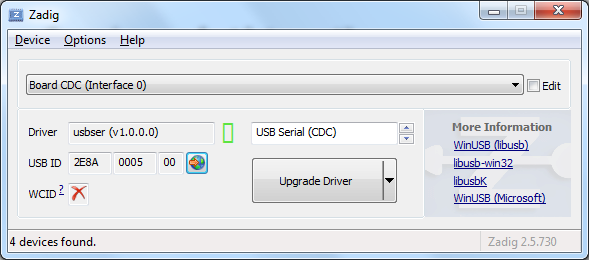

Installation¶
The Arduino-Pico core can be installed using the Arduino IDE Boards Manager or using git. If you want to simply write programs for your RP2040 board, the Boards Manager installation will suffice, but if you want to try the latest pre-release versions and submit improvements, you will need the git instllation.
Installing via Arduino Boards Manager¶
Note for Windows Users: Please do not use the Windows Store version of the actual Arduino application because it has issues detecting attached Pico boards. Use the “Windows ZIP” or plain “Windows” executable (EXE) download direct from https://arduino.cc. and allow it to install any device drivers it suggests. Otherwise the Pico board may not be detected. Also, if trying out the 2.0 beta Arduino please install the release 1.8 version beforehand to ensure needed device drivers are present.
Open up the Arduino IDE and go to File->Preferences.
In the dialog that pops up, enter the following URL in the “Additional Boards Manager URLs” field: https://github.com/earlephilhower/arduino-pico/releases/download/global/package_rp2040_index.json

Hit OK to close the dialog.
Go to Tools->Boards->Board Manager in the IDE
Type “pico” in the search box and select “Add”:

Installing via GIT¶
To install via GIT (for latest and greatest versions):
mkdir -p ~/Arduino/hardware/pico
git clone https://github.com/earlephilhower/arduino-pico.git ~/Arduino/hardware/pico/rp2040
cd ~/Arduino/hardware/pico/rp2040
git submodule update --init
cd pico-sdk
git submodule update --init
cd pico-extras
git submodule update --init
cd ../tools
python3 ./get.py
Installing both Arduino and CMake¶
Tom’s Hardware presented a very nice writeup on installing arduino-pico on both Windows and Linux, available at Tom’s Hardware .
If you follow their step-by-step you will also have a fully functional CMake-based environment to build Pico apps on if you outgrow the Arduino ecosystem.
Uploading Sketches¶
To upload your first sketch, you will need to hold the BOOTSEL button down while plugging in the Pico to your computer. Then hit the upload button and the sketch should be transferred and start to run.
After the first upload, this should not be necessary as the arduino-pico core has auto-reset support. Select the appropriate serial port shown in the Arduino Tools->Port->Serial Port menu once (this setting will stick and does not need to be touched for multiple uploads). This selection allows the auto-reset tool to identify the proper device to reset. Them hit the upload button and your sketch should upload and run.
In some cases the Pico will encounter a hard hang and its USB port will not respond to the auto-reset request. Should this happen, just follow the initial procedure of holding the BOOTSEL button down while plugging in the Pico to enter the ROM bootloader.
Windows 7 Driver Notes¶
Windows 10, Linux, and Mac will all support the Pico CDC/ACM USB serial port automatically. However, Windows 7 may not include the proper driver and therefore no detect the Pico for automatic uploads or the Serial Monitor.
For Windows 7, if this occurs, you can use Zadig <https://zadig.akeo.ie/>
to install the appropriate driver. Select the USB ID of 2E8A and use
the USB Serial (CDC) driver.

Windows 7 Installation Problems¶
When running MalwareBytes antivirus (or others) the scanner may lock the compiler or other toolchain executables, causing installation or build failures. (Thanks to @Andy2No)
Symptoms include:
*Access denied during update in the boards manager - affects the .exe files, because MalwareBytes has locked them. * Access denied during compilation, to one of the .exe files - same reason. * Can’t delete the .exe files - they’re locked by MalwareBytes.
A workaround is possible, involving setting the toolchain as an “excluded directory” and reinstalling.
In MalwareBytes Settings, click the Exclusions tab. Add an exclusion for the equivalent of this folder path:
C:\Users{YOUR_USERNAME_HERE}\AppData\Local\Arduino15\packages\rp2040\tools\pqt-gcc\1.1.0-a-81a1771
Reboot to unlock the files.
Do the boards manager installation / upgrade again.
Set the board type, e.g. to Raspberry Pi Pico and check it can compile.
Uploading Filesystem Images¶
The onboard flash filesystem for the Pico, LittleFS, lets you upload a filesystem image from the sketch directory for your sketch to use. Download the needed plugin from
To install, follow the directions in
For detailed usage information, please check the repo documentation available at
Uploading Sketches with Picoprobe¶
If you have built a Raspberry Pi Picoprobe, you can use OpenOCD to handle your sketch uploads and for debugging with GDB.
Under Windows a local admin user should be able to access the Picoprobe port automatically, but under Linux udev must be told about the device and to allow normal users access.
To set up user-level access to Picoprobes on Ubuntu (and other OSes which use udev):
echo 'SUBSYSTEMS=="usb", ATTRS{idVendor}=="2e8a", ATTRS{idProduct}=="0004", GROUP="users", MODE="0666"' | sudo tee -a /etc/udev/rules.d/98-PicoProbe.rules
sudo udevadm control --reload
The first line creates a file with the USB vendor and ID of the Picoprobe and tells UDEV to give users full access to it. The second causes udev to load this new rule. Note that you will need to unplug and re-plug in your device the first time you create this file, to allow udev to make the device node properly.
Once Picoprobe permissions are set up properly, then select the board “Raspberry Pi Pico (Picoprobe)” in the Tools menu and upload as normal.
Uploading Sketches with pico-debug¶
pico-debug differs from Picoprobe in that pico-debug is a virtual debug pod that runs side-by-side on the same RP2040 that you run your code on; so, you only need one RP2040 board instead of two. pico-debug also differs from Picoprobe in that pico-debug is standards-based; it uses the CMSIS-DAP protocol, which means even software not specially written for the Raspberry Pi Pico can support it. pico-debug uses OpenOCD to handle your sketch uploads, and debugging can be accomplished with CMSIS-DAP capable debuggers including GDB.
Under Windows and macOS, any user should be able to access pico-debug automatically, but under Linux udev must be told about the device and to allow normal users access.
To set up user-level access to all CMSIS-DAP adapters on Ubuntu (and other OSes which use udev):
echo 'ATTRS{product}=="*CMSIS-DAP*", MODE="664", GROUP="plugdev"' | sudo tee -a /etc/udev/rules.d/98-CMSIS-DAP.rules
sudo udevadm control --reload
The first line creates a file that recognizes all CMSIS-DAP adapters and tells UDEV to give users full access to it. The second causes udev to load this new rule. Note that you will need to unplug and re-plug in your device the first time you create this file, to allow udev to make the device node properly.
Once CMSIS-DAP permissions are set up properly, then select the board “Raspberry Pi Pico (pico-debug)” in the Tools menu.
When first connecting the USB port to your PC, you must copy pico-debug-gimmecache.uf2 to the Pi Pico to load pico-debug into RAM; after this, upload as normal.
Debugging with Picoprobe/pico-debug, OpenOCD, and GDB¶
The installed tools include a version of OpenOCD (in the pqt-openocd directory) and GDB (in the pqt-gcc directory). These may be used to run GDB in an interactive window as documented in the Pico Getting Started manuals from the Raspberry Pi Foundation. For pico-debug, replace the raspberrypi-swd and picoprobe example OpenOCD arguments of “-f interface/raspberrypi-swd.cfg -f target/rp2040.cfg” or “-f interface/picoprobe.cfg -f target/rp2040.cfg” respectively in the Pico Getting Started manual with “-f board/pico-debug.cfg”.